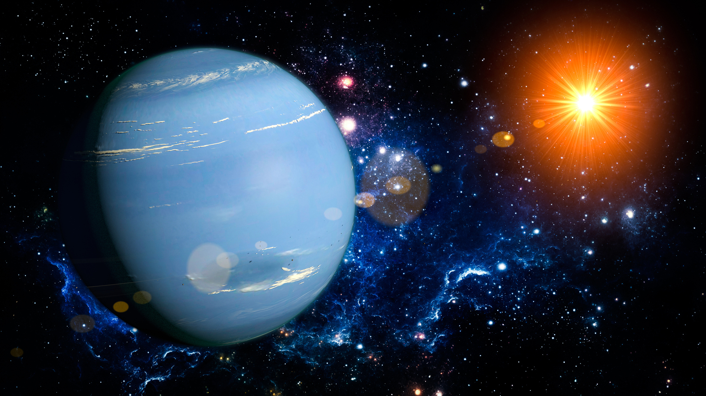

كوكب نبتون هو الكوكب الثامن والأبعد في المجموعة الشمسية، ويتميز بلونه الأزرق المميز بسبب وجود غاز الميثان في غلافه الجوي. يشتهر نبتون برياحه السريعة وأحواله الجوية العاصفة، ويحتوي على العديد من الأقمار مثل ترايتون.